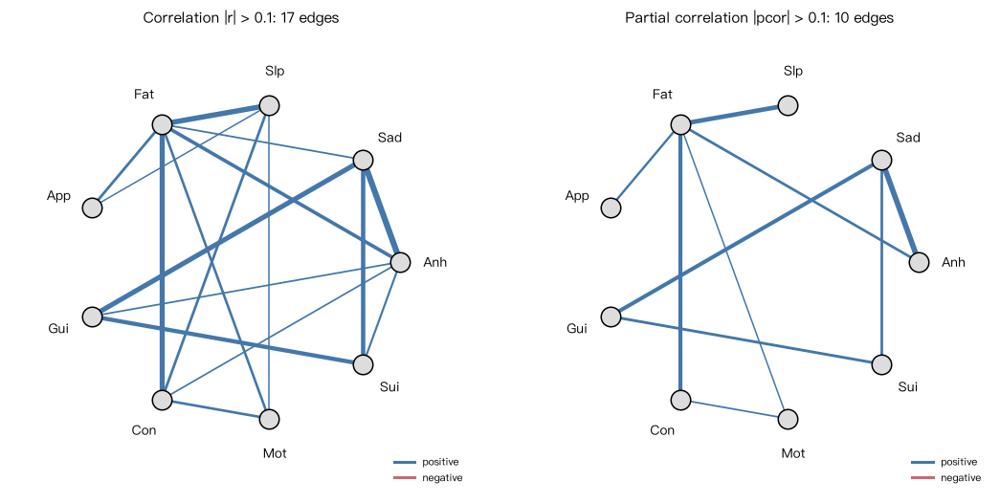
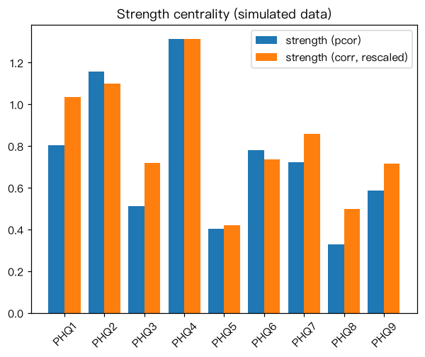
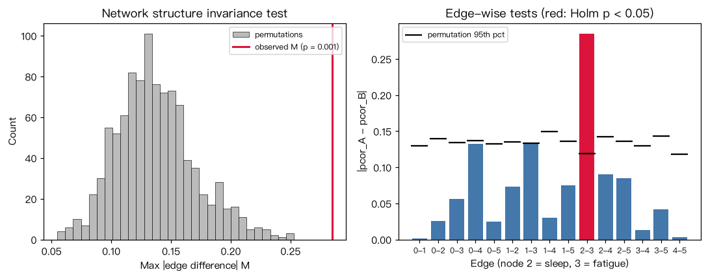

一组基于“介于性”的中心性度量
A set of measures of centrality based on betweenness
Freeman LC
用“一个节点落在多少对节点的最短路径上”来定义中心性，给出节点介数、标准化介数和整个网络的中心化指标。
症状网络的理论假设、量表数据、偏相关与正则化估计、中心性与稳定性、网络比较与个体动态网络。
Symptom networks and network psychiatry
把症状视为相互作用的网络节点，估计偏相关、Ising 与时间序列网络，并检验中心性、稳定性与组间差异。

相关网络与偏相关网络症状网络与网络精神病学
强度中心性与预期影响症状网络与网络精神病学 中心性稳定性——简化版病例删除 bootstrap症状网络与网络精神病学
中心性稳定性——简化版病例删除 bootstrap症状网络与网络精神病学 EBICglasso——图形 LASSO 加 EBIC 选择惩罚参数症状网络与网络精神病学
EBICglasso——图形 LASSO 加 EBIC 选择惩罚参数症状网络与网络精神病学 二值症状的 Ising 模型——Gibbs 抽样与逐节点 L1 逻辑回归（eLasso 思路）症状网络与网络精神病学
二值症状的 Ising 模型——Gibbs 抽样与逐节点 L1 逻辑回归（eLasso 思路）症状网络与网络精神病学 桥中心性——抑郁与焦虑症状之间的"桥"症状网络与网络精神病学
桥中心性——抑郁与焦虑症状之间的"桥"症状网络与网络精神病学
网络比较检验（NCT）的置换逻辑症状网络与网络精神病学 个体内与个体间网络可以方向相反——多被试 VAR(1) 与 GVAR 的三种网络症状网络与网络精神病学
个体内与个体间网络可以方向相反——多被试 VAR(1) 与 GVAR 的三种网络症状网络与网络精神病学A set of measures of centrality based on betweenness
Freeman LC
用“一个节点落在多少对节点的最短路径上”来定义中心性，给出节点介数、标准化介数和整个网络的中心化指标。
Network analysis: an integrative approach to the structure of psychopathology
Borsboom D, Cramer AOJ
系统阐述把精神障碍看作症状之间因果相互作用的网络观点，综述症状网络的构建、分析和模拟方法及其临床意义。
Estimating psychological networks and their accuracy: a tutorial paper
Epskamp S, Borsboom D, Fried EI
提出检验症状网络边权准确性与中心性稳定性的 bootstrap 流程和 CS 系数（R 包 bootnet）。
Module control of network analysis in psychopathology
Pan C, Zhang Q, Zhu Y, Kong S, Liu J, Zhang C, et al.
用最小支配集在模块尺度分析症状网络的控制关系，发现 2773 名大学新生中睡眠、压力模块结构上控制情绪模块。